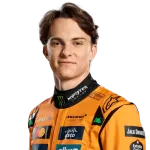

Lando Norris
Lando Norris (Bristol, 1999) es un destacado piloto de automovilismo británico-belga, consolidado como una superestrella de la Fórmula 1. Tras su debut en 2019, se convirtió en el líder de McLaren y se coronó campeón mundial de la Fórmula 1 en 2025, tras ser subcampeón en 2024, destacando por su consistencia, velocidad pura y carisma